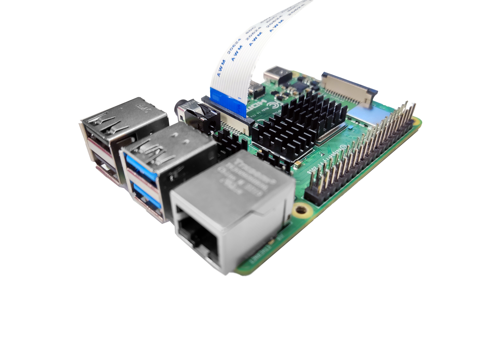
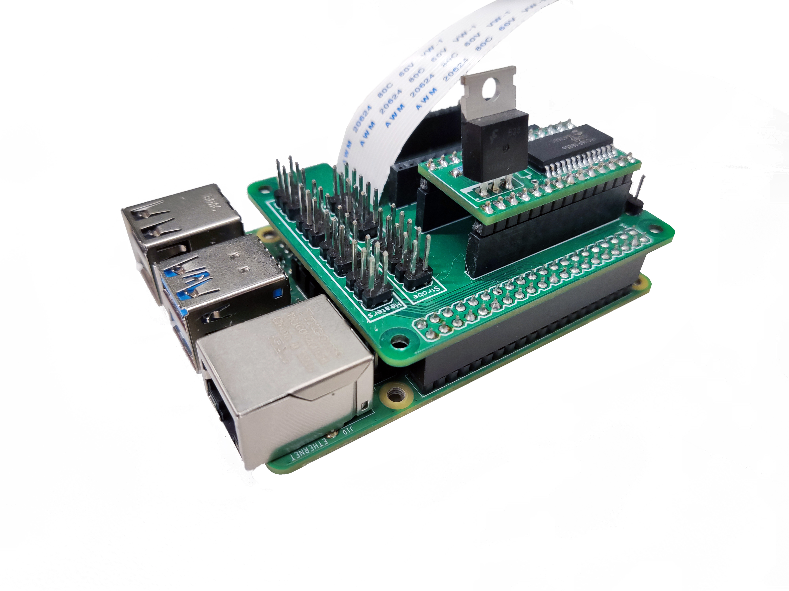
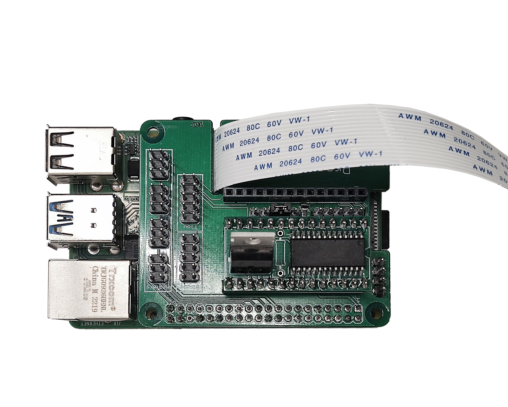
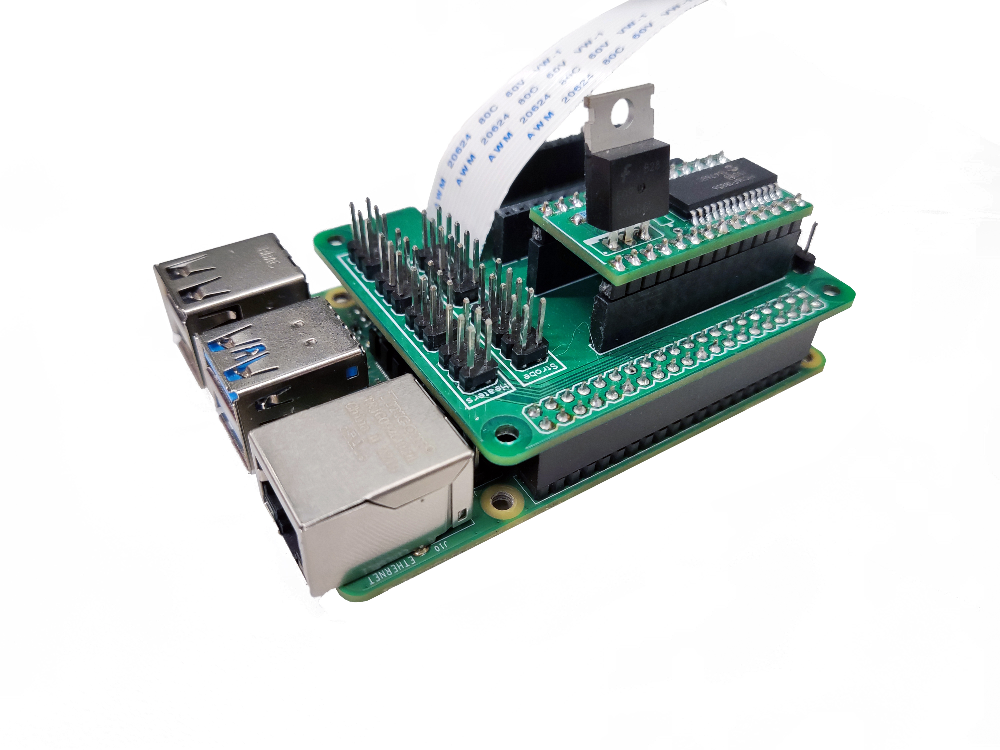
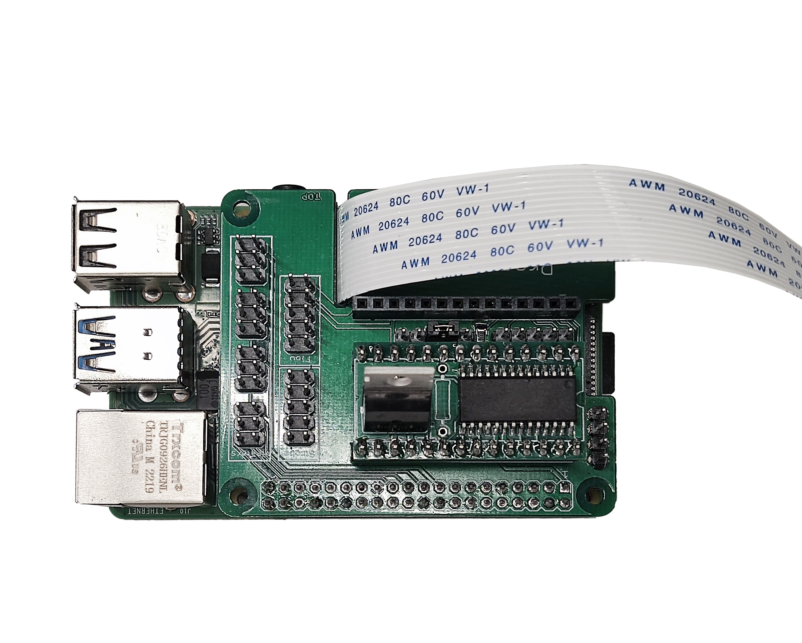

Mount the electronics
Tools
Consumables
Electronic Components
- 1 Pi HAT - This is a custom open-source board documented here
- 1 Raspberry Pi
- 1 Strobe Cable - This is a custom connector documented here
- 1 Strobe Module - This is a custom open-source board documented here
Mechanical Components
Printed Parts
These instructions assume you have the custom electronic components pre-assembled.
Caution! The electronic boards are static sensitive. Before touching them, touch a metal-earthed object. If you own one, consider wearing an anti-static strap.
Step 1: Connect the camera
- Use nitrile gloves to manipulate electronic components.
- Insert the ribbon cable from the optics module into the camera port of the Raspberry Pi, ensuring the contacts are on the opposite side of the clasp. There are detailed instructions on the Raspberry Pi website.

Step 2: Prepare the electronics
- Place the strobe module over the Pi HAT.
- Mount the Pi HAT on the Raspberry Pi GPIO headers. There is a space to place the ribbon cable.
 



- Connect the 5-pin double row DuPont female connector of the strobe cable to the Pi HAT.


Step 3: Mount the boards
- Take four M3x25mm cap head screws and insert them into each hole from the Pi hat and the Raspberry Pi. Use a 2.5mm Ball-end Allen key.
- Use a 11mm spacer in between the holes next to the power supply and USB connectors. A needle-nose plier can be helpful to hold the spacer while you screw.


- Use a 4mm spacer in between the electronic assembly and the bottom plate.
- Place the electronic assembly in the bottom plate and attach it to the surface using four M3 nuts. A needle-nose plier can be helpful to hold the nut.